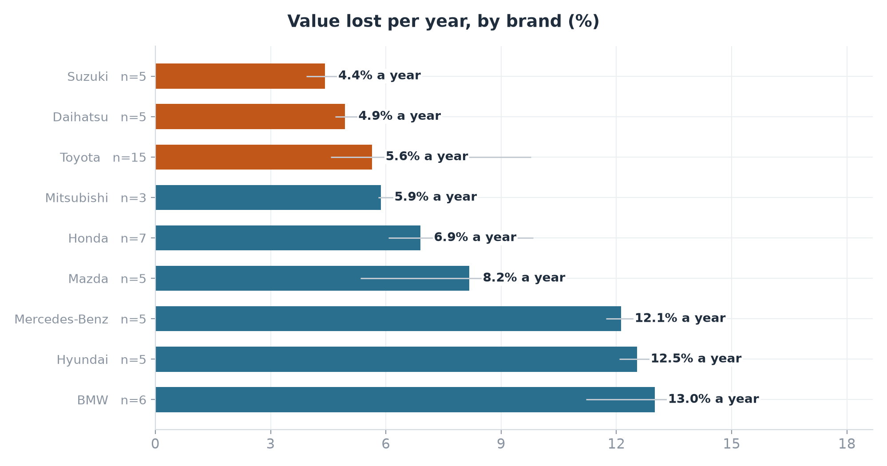
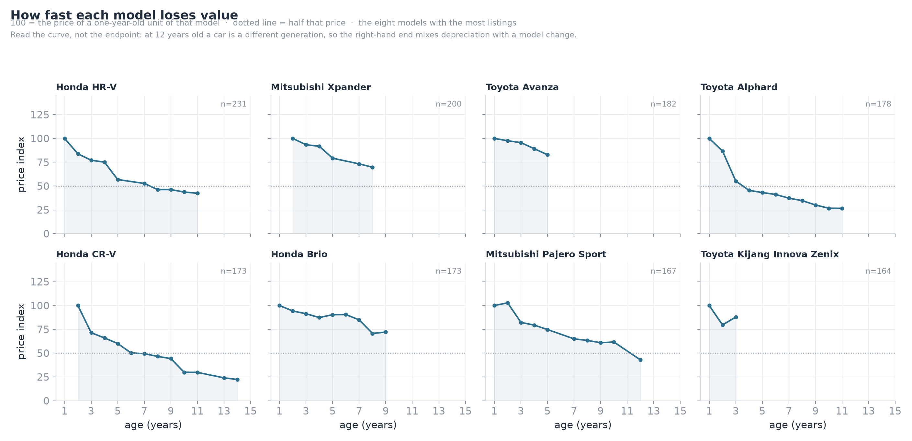
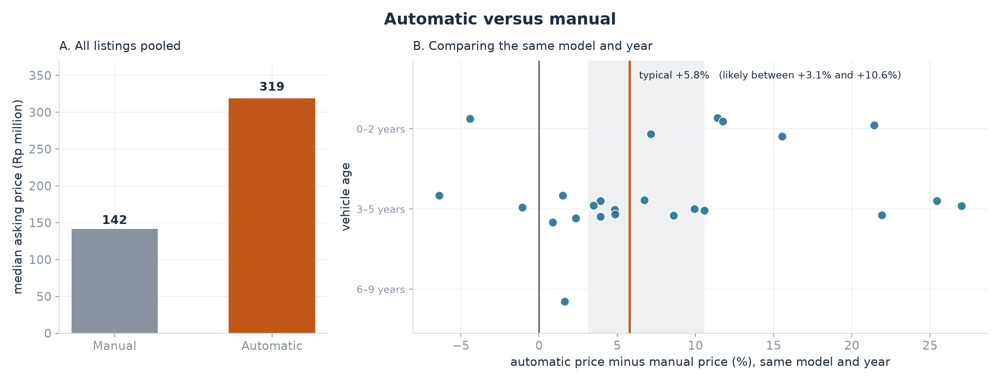
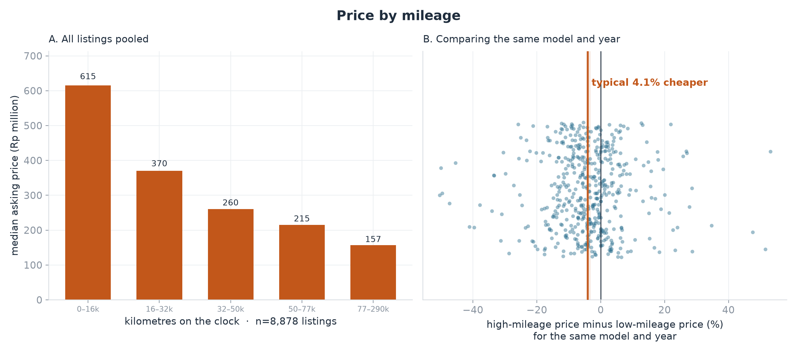
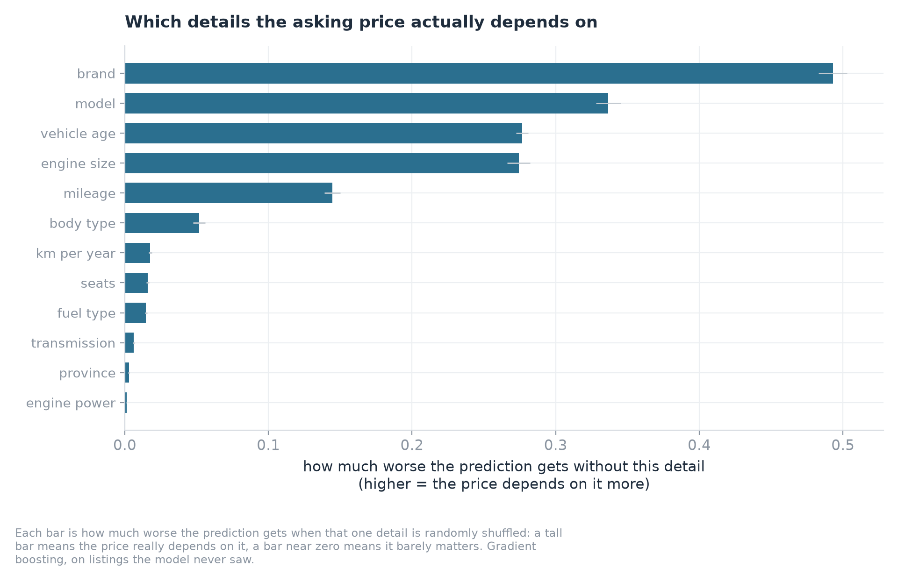
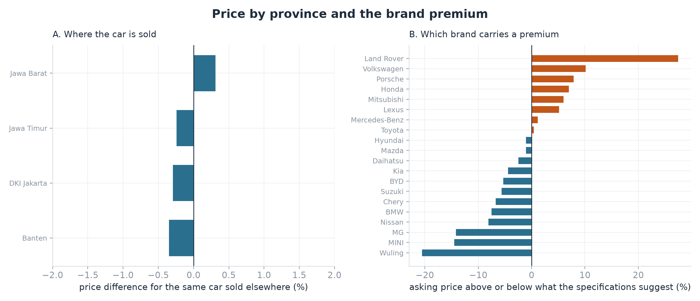
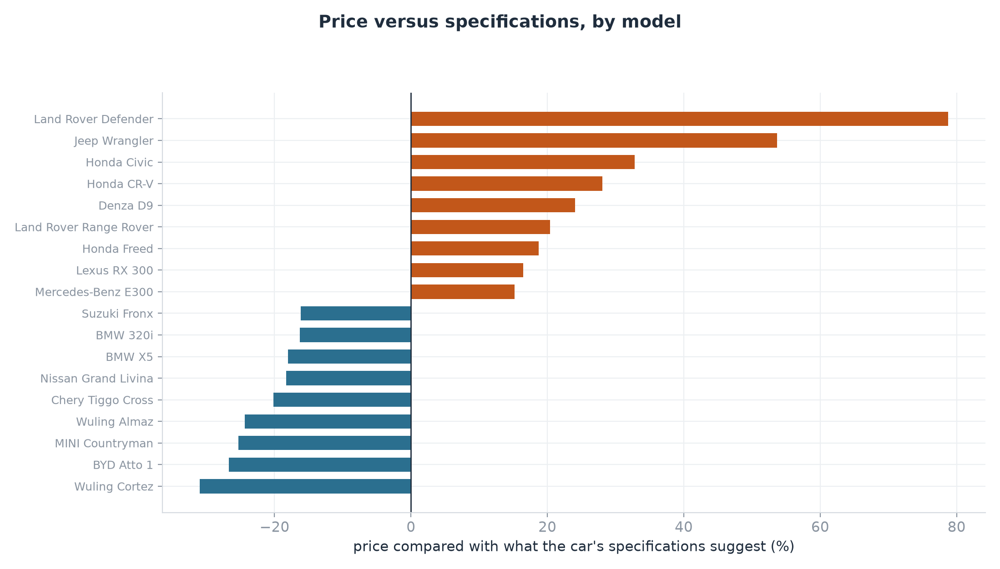
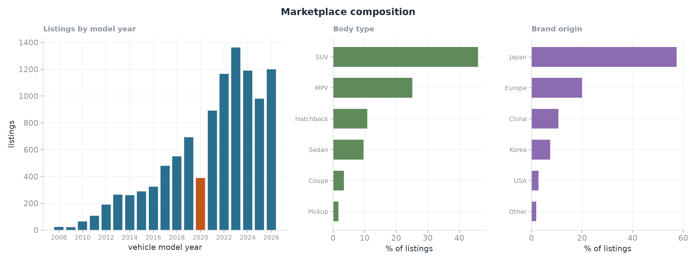

Regression · Indonesian used-car market
What the Indonesian used-car market actually charges for
I scraped 12,000 live listings from Mobil123 into 10,484 unique cars, then priced them with a gradient-boosting model that holds model and year constant. The question was not what does a used car cost — it was what does the market actually charge for.
Why this question? Conventional wisdom says a car loses value on a predictable curve. Indonesian listings suggest something stranger: the asking price is set almost entirely by which brand and model it is and what year, while the things buyers believe they are negotiating over — the transmission, the odometer, the city — move the number by a few percent at most.
- 10,484 Cars analysed
- 3× BMW loses value three times faster than Suzuki
- 5.8% Extra price of an automatic, same model and year
- 4.1% Discount on a high-mileage version of the same car
Some brands lose value three times faster than others
For every extra year on the road, a Suzuki loses about 4.4% of its value, a Toyota 5.6% and a BMW 13.0%. Everyone knows Japanese cars hold value better; the surprise is how wide the gap is. Ten years on, a BMW asks roughly a fifth of what a one-year-old one does — a Suzuki or a Toyota about half.
An automatic is worth 5.8% more, not 125%
Compare every automatic with every manual and the automatic looks 125% more expensive. That number is meaningless: it is really comparing family cars with delivery vans. Compare the automatic and manual versions of the same model and year and the gap falls to about 5.8%.
High mileage costs far less than buyers expect
Group every listing by mileage and the highest-mileage group asks 74% less. But those are mostly old, cheap models. Compare two cars of the same model and year: the one with nearly three times the kilometres asks only about 4% less, and even past 150,000 km the discount stays under 5%.








What this means
- For buyers — the asking price is mostly the brand, the model and the year. Mileage and transmission barely move it, which is where the room to negotiate sits. A high-mileage example of the right model and year is where the discount is.
- For sellers — a full service history, first-owner status and a low odometer do not show up in the asking price on this platform. They may still matter at the negotiating table, but they are not what the market pays for on paper.
- For analysts — a median-by-model-year lookup is a strong baseline that a linear model could not beat. Most of the apparent signal in this market is composition, and holding model and year constant is the cheapest way to see through it.
Scope & limits
One platform, one moment. These are 10,484 cars left after removing 12.3% duplicate listings from the 12,000 scraped from Mobil123 on 10 November 2026. Every price is an asking price, never a completed sale. 97.7% of the listings come from dealers, so private sellers are almost absent. The sample gives some brands more listings than others, so every car carries a weight that corrects for it whenever a market-wide figure is calculated. Finally, only four provinces list enough cars to compare, so the location finding describes Java, not all of Indonesia.